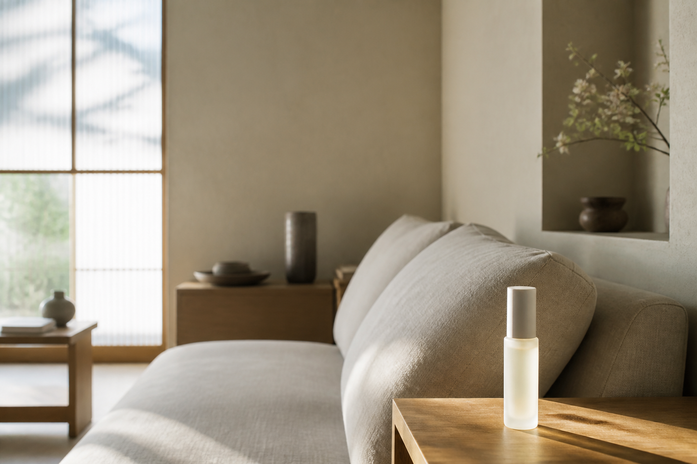

処方は、最小で。
成分を増やして強く見せない。本当に必要なものだけを残します。
BRAND
足りないものを足すより、毎日の土台を整える。考える仕事をする人のためのインナーケア食品です。

MAISONは、医師であり創業者の青山律が、診療と生活者としての実感のあいだで考え続けてきたインナーケアです。健康食品の棚に並ぶ強さや、ジムサプリの攻撃性は選びません。
ハイエンドコスメや上質な道具のような佇まいで、男女どちらにも置ける一本をつくりました。効能を約束するのではなく、毎朝戻れる習慣を設計しています。
ターゲットは25〜45歳。経営者、ビジネスパーソン、クリエイター、士業。知的労働で生計を立てる人の、静かな毎日に寄り添うことが目的です。
FOUNDER
Physician / Founder
臨床の現場と、自分自身の知的労働のあいだで「続けられる内側のケア」を探してきました。足すほど強くなる処方ではなく、最小で、机の上に出せる佇まいであること。それがMAISONの起点です。
本サイトの肩書き・経歴はブランド世界観のための設定です。製品は食品であり、治療を目的としません。
成分を増やして強く見せない。本当に必要なものだけを残します。
ドラッグストアの棚ではなく、洗面台に置きたくなる一本を目指しています。
特別な儀式は不要です。朝の水と一緒に、続けることだけを設計しました。
「足りないものを足すより、毎日の土台を整える。それが、考える仕事をする人の美容だと思っています。」